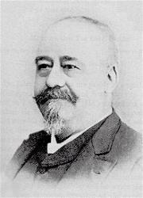

John R. Sweney (1837-1899)

was born in West Chester,
Pennsylvania, and exhibited musical abilities at an early age. At nineteen
he was studying with a German music teacher, leading a choir and glee club,
and performing at children’s entertainments. By twenty-two he was teaching
at a school in Dover, Delaware. Soon thereafter, he was put in charge of the
band of the Third Delaware Regiment of the Union Army for the duration of
the Civil War. After the war, he became Professor of Music at the
Pennsylvania Military Academy, and director of Sweney’s Cornet Band. He
eventually earned Bachelor and Doctor of Music degrees at the Academy.
Sweney began composing
church music in 1871 and became well-known as a leader of large
congregations. His appreciators stated “Sweney knows how to make a
congregation sing” and “He had great power in arousing multitudes.” He also
became director of music for a large Sunday school at the Bethany
Presbyterian Church in Philadelphia of which John Wanamaker was
superintendent (Wanamaker was the founder of the first major department
store in Philadelphia). In addition to his prolific output of hymn melodies
and other compositions, Sweney edited or co-edited about sixty song
collections, many in collaboration with William J. Kirkpatrick. Sweney died
on April 10, 1899, and his memorial was widely attended and included a
eulogy by Wanamaker.
Joe Hickerson from
"Joe's Jottings #9" used by permission
The History of More About Jesus Hymn
Eliza Edmunds Hewitt penned this hymn, More About Jesus
in 1887.
Hewitt was born in 1851 in Philadelphia, Pennsylvania. She was initially
trained as a teacher but later this work due to a spinal malady that
incapacitated for many years. She spent most of the time during this
experience indoors.
While convalescing she studied English literature and wrote poems for
the primary department of the Presbyterian church. She later became
superintendent of the primary department of the church when her
condition improved.
Even though her condition had improved enough for her to work she still
suffered from pain throughout the rest of her life.
The present song was originally part of the poems that she wrote while
she was incapacitated. It expresses her desire to know more about Jesus.
More along the lines of Philippians 3:10, "I want to know Christ and the
power of His resurrection...
This poem was set to music by Professor John R Sweeney who did the same
for other poems from this lady.
Through her pain, she desired to know more about Jesus. May this be the
prayer of all of us.
Other songs that were authored by here include, "Give Me Thy Heart, Says
the Father Above," "When We All Get to Heaven," "Sunshine in My Soul,"
and "Will there be any Stars in My Crown?"
Eliza Hewitt (1851-1920) wrote this song as she was studying the promises of God
that had been fulfilled in Jesus Christ. The more she studied, the more excited
she became as she saw Scripture fulfilled in every aspect of the life of Jesus.
All Scripture, she discovered, focused on Jesus Christ.
It is especially significant that Eliza was so faithfully seeking God at this
point in her life. At the time, she was recovering from a severe spinal injury.
A Philadelphia schoolteacher, Eliza had been struck in the back with a heavy
slate by one of her students. She became a virtual shut-in for many years… but
eventually was able to be involved in the ministries of her church, the Calvin
Presbyterian Church.
Eliza was never able to go back to teaching in public schools, but she did
continue to be involved in Sunday School; at one point, her class had as many as
200 children! There, she was able to combine the 2 great loves of her life:
children and Jesus.
She wrote several hymns you have heard, “When We All Get to Heaven,” “Sunshine
in My Soul,” “Will there be any Stars in My Crown?” and this hymn.
Eliza Edmunds Hewitt was born in 1851, graduated as valedictorian of her
normal school class and went on to teach in the public schools in
Philadelphia. All of this suddenly ended when she suffered a debilitating
back injury and became bed-ridden for an extended period of time.
Could she have been bitter? Certainly. Could she have complained to God
about the unfairness of it all? None of us would have blamed her if she did.
But the truth is, she didn't. From her bed, she studied English literature
and began to sing and write.
She took this time to learn
more
about Jesus. This was her prayer to her Lord, that he open her eyes
so she would see more of Him and reflect more of Him.
More about Jesus let me learn,
More of His holy will discern;
Spirit of God, my teacher be,
Showing the things of Christ to me.
Some of her poems became known to Professor John R. Sweeney, who set them to
music.
Eliza's back condition improved and she was able to resume some of her
duties, though she struggled with pain the rest of her life. She became
Sunday school superintendent of the Northern Home for Friendless Children
and later at Calvin Presbyterian Church. She died in 1920.